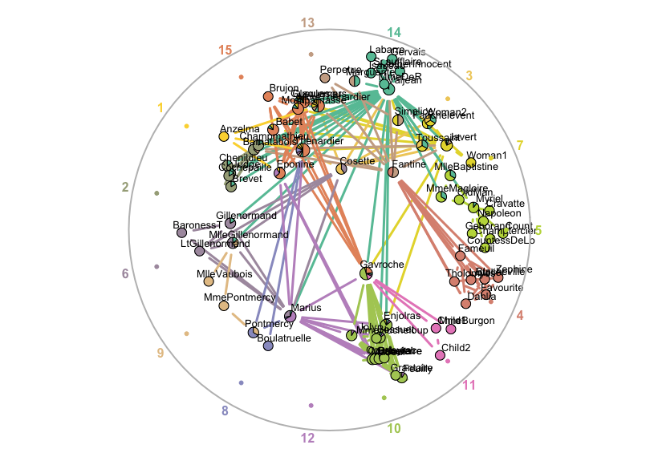

Summary
linkcomm is an R package that provides tools for generating, visualising, and analysing Link Communities in networks. See the companion paper for more information.
Installation
install.packages("linkcomm")
Usage
# Explore the in-built Les Miserables network: library(linkcomm) lm <- getLinkCommunities(lesmiserables)

# Visualize the communities: plot(lm, type = "graph", layout="spencer.circle")

# Extract the nodes from the first community: nodes_c1 <- getNodesIn(lm, clusterids = 1) # Nodes shared by communities 10 and 11: nodes_sh <- get.shared.nodes(lm, comms = 10:11) # Community connectedness score: comm.conn <- getCommunityConnectedness(lm)